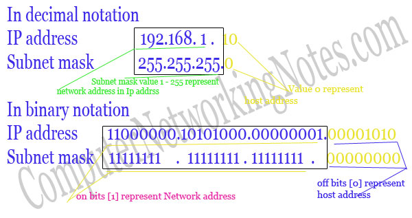

This tutorial explains Subnetting in easy language with examples. This tutorial is divided in three sections. First section provides a basic overview of Subnetting tools. Second section explains Subnetting process in easy steps. Last section includes Subnetting examples for beginners.
Subnetting is a process of dividing large network into the smaller networks based on layer 3 IP address. Every computer on network has an IP address that represent its location on network. Two version of IP addresses are available IPv4 and IPv6. In this article we will perform subnetting on IPv4.
IP addresses are displayed in dotted decimal notation, and appear as four numbers separated by dots. Each number of an IP address is made from eight individual bits known as octet. Each octet can create number value from 0 to 255. An IP address would be 32 bits long in binary divided into the two components, network component and host component. Network component is used to identify the network that the packet is intend for, and host component is used to identify the individual host on network.
IP addresses are broken into the two components:
Network component :- Defines network segment of device.
Host component :- Defines the specific device on a particular network segment
Class A addresses range from 1-126
Class B addresses range from 128-191
Class C addresses range from 192-223
Class D addresses range from 224-239
Class E addresses range from 240-254
This tutorial is the second part of our article “Network Addressing Explained with Subnetting and VLSM”. You can read other parts of this article here.
Basic of Network Addressing
This tutorial is the first part of this article. In this introductory part I explained how computers find each other in network with basic terminology of network addressing.
VLSM Tutorial with Examples
This tutorial is the last part of this article. In this part I will explain VLSM in detail with examples. Later I will provide a unique six steps method of VLSM that will help you in learning VLSM rapidly.
Subnet mask is a 32 bits long address used to distinguish between network address and host address in IP address. Subnet mask is always used with IP address. Subnet mask has only one purpose, to identify which part of an IP address is network address and which part is host address.
For example how will we figure out network partition and host partition from IP address 192.168.1.10 ? Here we need subnet mask to get details about network address and host address.
In decimal notation
IP address 192.168.1.10
Subnet mask 255.255.255.0
Network address is 192.168.1 and host address is 10.
In binary notation
IP address 11000000.10101000.00000001.00001010
Subnet mask 11111111.11111111.11111111.00000000
Network address is 11000000.10101000.00000001 and host address is 00001010

| A | 255.0.0.0 | First 8 bits | Last 24 bits | 16, 777, 216 | 16, 777, 214 |
| B | 255.255.0.0 | First 16 bits | Last 16 bits | 65,536 | 65,534 |
| C | 255.255.255.0 | First 24 bits | Last 8 bits | 256 | 254 |
First address of subnet is called network ID. This address is used to identify one segment or broadcast domain from all the other segments in the network.
Block size is the size of subnet including network address, hosts addresses and broadcast address.
There are two types of broadcast, direct broadcast and full broadcast.
Direct broadcast or local broadcast is the last address of subnet and can be hear by all hosts in subnet.
Full broadcast is the last address of IP classes and can be hear by all IP hosts in network. Full broadcast address is 255.255.255.255
The main difference between direct broadcast and full broadcast is that routers will not propagate local broadcasts between segments, but they will propagate directed broadcasts.
All address between the network address and the directed broadcast address is called host address for the subnet. You can assign host addresses to any IP devices such as PCs, servers, routers, and switches.
Subnetting is a process of breaking large network in small networks known as subnets. Subnetting happens when we extend default boundary of subnet mask. Basically we borrow host bits to create networks. Let's take a example
Being a network administrator you are asked to create two networks, each will host 30 systems.
Single class C IP range can fulfill this requirement, still you have to purchase 2 class C IP range, one for each network. Single class C range provides 256 total addresses and we need only 30 addresses, this will waste 226 addresses. These unused addresses would make additional route advertisements slowing down the network.
With subnetting you only need to purchase single range of class C. You can configure router to take first 26 bits instead of default 24 bits as network bits. In this case we would extend default boundary of subnet mask and borrow 2 host bits to create networks. By taking two bits from the host range and counting them as network bits, we can create two new subnets, and assign hosts them. As long as the two new network bits match in the address, they belong to the same network. You can change either of the two bits, and you would be in a new subnet.
Subnetting process involves binary math calculation. Computers communicate with each other's in binary language. To succeed in any kind of networking career, you might be fluent in binary math calculation. Subnetting needs two type of calculation, convert decimal to binary and convert binary to decimal.
Binary system works exactly same as decimal system, except the base number. Base number is 2 in binary system and 10 in decimal system. To calculate decimal equivalent value of a binary number, you have to replace base value 10 with 2. Binary numbers are displayed in columns and each position in binary system has double value than the position in right. From earlier section of this article you know that each number of an IP address is made from eight individual bits known as octet. So you should remember at least eight decimal equivalent value from binary position.
| Base position | 27 | 26 | 25 | 24 | 23 | 22 | 21 | 20 |
| Decimal value | 128 | 64 | 32 | 16 | 8 | 4 | 2 | 1 |
Convert decimal to binary
To convert a decimal number in binary we would use addition till number method. In this method we start adding from left to get target value. If after adding right position value, sum is lower than target number, keep adding, or if sum is greater than target number skip the position value. Only the value of on bit [1] will be added in sum. Off bit [0] has zero value. For example, convert decimal number 117 in binary.
Target decimal number 117
Move direction From Left ===========================> to Right
| Base position | 27 | 26 | 25 | 24 | 23 | 22 | 21 | 20 |
| Decimal value | 128 | 64 | 32 | 16 | 8 | 4 | 2 | 1 |
| Bit status | 0 | 1 | 1 | 1 | 0 | 1 | 0 | 1 |
| Decimal value in addition | 0 | 64 | 32 | 16 | 0 | 4 | 0 | 1 |
Binary value of 117 is 01110101.
| 128 is greater than 117 | off the bit |
| 0+64 = 64 is less than 117 | on the bit |
| 0+64+32 = 96 is less than 117 | on the bit |
| 0+64+32+16 = 112 is less than 117 | on the bit |
| 0+64+32+16+8 = 120 is greater than 117 | off the bit |
| 0+64+32+16+0+4 = 116 is less than 117 | on the bit |
| 0+64+32+16+0+4+2 = 118 is greater than 117 | off the bit |
| 0+64+32+16+0+4+0+1 = 117 is equivalent to 117 | on the bit |
Convert binary in decimal
To convert a binary in decimal we will follow above method in reverse mode. We will find the decimal value of on binary bit position and add them. For example convert 10101010 binary number in decimal.
Target binary number 10101010
Move direction From Left ===========================> to Right
| Base position | 27 | 26 | 25 | 24 | 23 | 22 | 21 | 20 |
| Decimal value | 128 | 64 | 32 | 16 | 8 | 4 | 2 | 1 |
| Bit status | 1 | 0 | 1 | 0 | 1 | 0 | 1 | 0 |
| Decimal value in addition | 128 | 0 | 32 | 0 | 8 | 0 | 2 | 0 |
Decimal value of 10101010 is 170 [ 128+0+32+0+8+0+2+0 ]
| 1 On bit | 128 |
| 0 Off bit | 0 |
| 1 On bit | 64 |
| 0 Off bit | 0 |
| 1 On bit | 32 |
| 0 Off bit | 0 |
| 1 On bit | 8 |
| 0 Off bit | 0 |
| 1 On bit | 2 |
| 0 Off bit | 0 |
Review above method and do as much practice of following as you can.
Better you are with this conversion, the better you will do on the subnetting.
Now you know the process of converting binary in decimal and decimal in binary. Our next step is to figure out the combination provided by a binary position.
First bit provide two combination 0 or 1. If we take two bits than we have four combinations 00,01,10,11. IP address has 32 bits, so you should be able to find the number of combinations provided by each bit position until position number 32.
| 1 | 2 | 17 | 131072 |
| 2 | 4 | 18 | 262144 |
| 3 | 8 | 19 | 524288 |
| 4 | 16 | 20 | 1048576 |
| 5 | 32 | 21 | 2097152 |
| 6 | 64 | 22 | 4194304 |
| 7 | 128 | 23 | 8388608 |
| 8 | 256 | 24 | 16777216 |
| 9 | 512 | 25 | 33554432 |
| 10 | 1024 | 26 | 67108864 |
| 11 | 2048 | 27 | 134217728 |
| 12 | 4096 | 28 | 268435456 |
| 13 | 8192 | 29 | 536870912 |
| 14 | 16384 | 30 | 1073741824 |
| 15 | 32768 | 31 | 2147483648 |
| 16 | 65536 | 32 | 4294967296 |
| A | 255.0.0.0 | Network.Host.Host.Host |
| B | 255.255.0.0 | Network.Network.Host.Host |
| C | 255.255.255.0 | Network.Network.Network.Host |
CIDR is a slash notation of subnet mask. CIDR tells us number of on bits in a network address.
In subnetting we find the answer of following questions.
To answer above questions we use following method of subnetting.
What is subnet mask for given address?
Subnetting take places when we extend the default subnet mask. We cannot perform subnetting with default subnet mask and every classes have default subnet mask. To figure out subnetted subnet mask ,we first need to write down the default subnet mask. Now find the host bits borrowed to create subnets and convert them in decimal. For example find the subnet mask of address 188.25.45.48/20 ? This address belong to class B and class B has default subnet mask 255.255.0.0[ /16 in CIDR ]. We borrowed 4 bits from hosts portion. As you know subnetting move from left to right and it cannot skip any network bit. So this subnet mask in binary would be 11111111. 11111111.11110000.00000000. First two octet have default value so its decimal value would be 255.255. We will convert third octet in decimal value. To convert a binary number in decimal we add its decimal equivalent value. In our example it would be 128+64+32+16+0+0+0+0 = 240. Our fourth octet has all bits off so its decimal value would be 0+0+0+0+0+0+0+0 =0. Our answer subnet mask would be 255.255.240.0
How many subnets does given subnet mask provide ?
To calculate the number of subnets provided by given subnet mask we use 2N , where N = number of bits borrowed from host bits to create subnets. For example in 192.168.1.0/27, N is 3. By looking at address we can determined that this address is belong to class C and class C has default subnet mask 255.255.255.0 [/24 in CIDR]. In given address we borrowed 27 - 24 = 3 host bits to create subnets. Now 23 = 8, so our answer is 8.
What is block size for subnet mask?
Block size or increment number is used to calculate the valid subnets. Once you figure out the block size, calculation of valid subnets become piece of cake. To figure out the block size, use this formula 256 - Subnet mask = block size. For example block size for subnet mask 255.255.255.240 is 256 - 240 = 16.
What are the valid subnets?
Calculating valid subnet is two steps process. First calculate total subnet by using formula 2N. In second step find the block size and count from zero in block until you reach the subnet mask value. For example calculate the valid subnets for 192.168.1.0/26.
Borrowed host bits are 2 [26-24].
Total subnets are 22 = 4.
Subnet mask would be 255.255.255.192.
Block size would be 256-192 = 64.
Start counting from zero at blocks of 64, so our valid subnets would be 0,64,128,192.
What are the total hosts?
Total hosts are the hosts available per subnet. To calculate total hosts use formula 2H = Total hosts. H is the number of host bits. For example in address 192.168.1.0/26 we have 32 - 26 [Total bits in IP address - Bits consumed by network address] = 6. Total hosts per subnet would be 26 = 64.
How many valid hosts are available per subnet?
Valid hosts are the number of hosts those can be assigned to devices. As we know, we need to reduce two address per subnet, one for network ID and another for broadcast ID. So our formula, to calculate valid hosts would be Total hosts - 2 = Valid hosts. In above example we have 64 hosts per subnet, so valid hosts in each subnet would be 64 - 2 = 62.
What is broadcast address of each subnet?
Broadcast address is the last address of subnet. This address is reserve for network broadcast, and cannot be assigned to any host. In above example
0 Subnet has broadcast address 63
64 Subnet has broadcast address 127
128 Subnet has broadcast address 191
192 Subnet has broadcast address 255
What is the network address of each subnet?
Network address is the first address of subnet. This address is used to locate the network, and cannot be assigned to any host. In above example address 0,64,128,192 are the network address.
At this point you have powered with all essential tools for subnetting. In last section of this article we will practically implement what we have learn so far. Due to length of this article I will include examples only from class C.
Default subnet mask of class C is 255.255.255.0. CIDR notation of class C is /24, which means 24 bits from IP address are already consumed by network portion and we have 8 host bits to work with. We cannot skip network bit, when we turned them on. Subnetting moves from left to right. So Class C subnet masks can only be the following:
| /25 | 128 | 10000000 |
| /26 | 192 | 11000000 |
| /27 | 224 | 11100000 |
| /28 | 240 | 11110000 |
| /29 | 248 | 11111000 |
| /30 | 252 | 11111100 |
As we have already discussed earlier in this article that we have to have at least 2 host bits for assigning IP addresses to hosts, that means we can't use /31 and /32 for subnetting.
/25
CIDR /25 has subnet mask 255.255.255.128 and 128 is 10000000 in binary. We used one host bit in network address.
N = 1 [Number of host bit used in network]
H = 7 [Remaining host bits]
Total subnets ( 2N ) :- 21 = 2
Block size (256 - subnet mask) :- 256 - 128 = 128
Valid subnets ( Count blocks from 0) :- 0,128
Total hosts (2H) :- 27 = 128
Valid hosts per subnet ( Total host - 2 ) :- 128 - 2 = 126
| Network ID | 0 | 128 |
| First host | 1 | 129 |
| Last host | 126 | 254 |
| Broadcast ID | 127 | 255 |
/26
CIDR /26 has subnet mask 255.255.255.192 and 192 is 11000000 in binary. We used two host bits in network address.
N = 2
H = 6
Total subnets ( 2N ) :- 22 = 4
Block size (256 - subnet mask) :- 256 - 192 = 64
Valid subnets ( Count blocks from 0) :- 0,64,128,192
Total hosts (2H) :- 26 = 64
Valid hosts per subnet ( Total host - 2 ) :- 64 - 2 = 62
| Network ID | 0 | 64 | 128 | 192 |
| First host | 1 | 65 | 129 | 193 |
| Last host | 62 | 126 | 190 | 254 |
| Broadcast ID | 63 | 127 | 191 | 255 |
/27
CIDR /27 has subnet mask 255.255.255.224 and 224 is 11100000 in binary. We used three host bits in network address.
N = 3
H = 5
Total subnets ( 2N ) :- 23 = 8
Block size (256 - subnet mask) :- 256 - 224 = 32
Valid subnets ( Count blocks from 0) :- 0,32,64,96,128,160,192,224
Total hosts (2H) :- 25 = 32
Valid hosts per subnet ( Total host - 2 ) :- 32 - 2 = 30
| Network ID | 0 | 32 | 64 | 96 | 128 | 160 | 192 | 224 |
| First host | 1 | 33 | 65 | 97 | 129 | 161 | 193 | 225 |
| Last host | 30 | 62 | 94 | 126 | 158 | 190 | 222 | 254 |
| Broadcast ID | 31 | 63 | 95 | 127 | 159 | 191 | 223 | 255 |
Sub = Subnet
/28
CIDR /28 has subnet mask 255.255.255.240 and 240 is 11110000 in binary. We used four host bits in network address.
N = 4
H = 4
Total subnets ( 2N ) :- 24 = 16
Block size (256 - subnet mask) :- 256 - 240 = 16
Valid subnets ( Count blocks from 0) :-0,16,32,48,64,80,96,112,128,144,160,176,192,208,224,240
Total hosts (2H) :- 24 = 16
Valid hosts per subnet ( Total host - 2 ) :- 16 - 2 = 14
I hope you have understand the pattern of making the subnet chart with above information's. Let's join me in this practice. For this example and next two examples I will fill only two subnets [first and last one], it's your turn to fill the middle subnets.
| Network ID | 0 | ........................................ | 240 |
| First host | 1 | ........................................ | 241 |
| Last host | 14 | ........................................ | 254 |
| Broadcast ID | 15 | ...................................... | 255 |
/29
CIDR /29 has subnet mask 255.255.255.248 and 248 is 11111000 in binary. We used five host bits in network address.
N = 5
H = 3
Total subnets ( 2N ) :- 25 = 32
Block size (256 - subnet mask) :- 256 - 248 = 8
Valid subnets ( Count blocks from 0) :-
0,8,16,24,32,40,48,56,64,72,80,88,96,104,112,120,128,136,144,152,160,168,176,184,192,200,208,216,224,232,240,248
Total hosts (2H) :- 23 = 8
Valid hosts per subnet ( Total host - 2 ) :- 8 - 2 = 6
| Network ID | 0 | .......................................... | 248 |
| First host | 1 | .......................................... | 249 |
| Last host | 6 | .......................................... | 254 |
| Broadcast ID | 7 | ......................................... | 255 |
/30
CIDR /30 has subnet mask 255.255.255.252 and 252 is 11111100 in binary. We used six host bits in network address.
N = 6
H = 2
Total subnets ( 2N ) :- 26 = 64
Block size (256 - subnet mask) :- 256 - 252 = 4
Valid subnets ( Count blocks from 0) :-
0,4,8,12,16,20,24,28,32,36,40,44,48,52,56,60,64,68,72,76,80,84,88,92,96,100,104,108,112,116,120,124,128,132,136,140,144,148,152,156,160,164,168,172,176,180,184,188,192,196,200,204,208,212,216,220,224,228,232,236,240,244,248,252
Total hosts (2H) :- 22 = 4
Valid hosts per subnet ( Total host - 2 ) :- 4 - 2 = 2
| Network ID | 0 | .......................................... | 252 |
| First host | 1 | .......................................... | 253 |
| Last host | 2 | .......................................... | 254 |
| Broadcast ID | 3 | ......................................... | 255 |
At the end of this long article I have a small word for you, that is practice. Believe me in exam you are going to face many questions related to subnetting. More practice will make you more comfortable in exam.